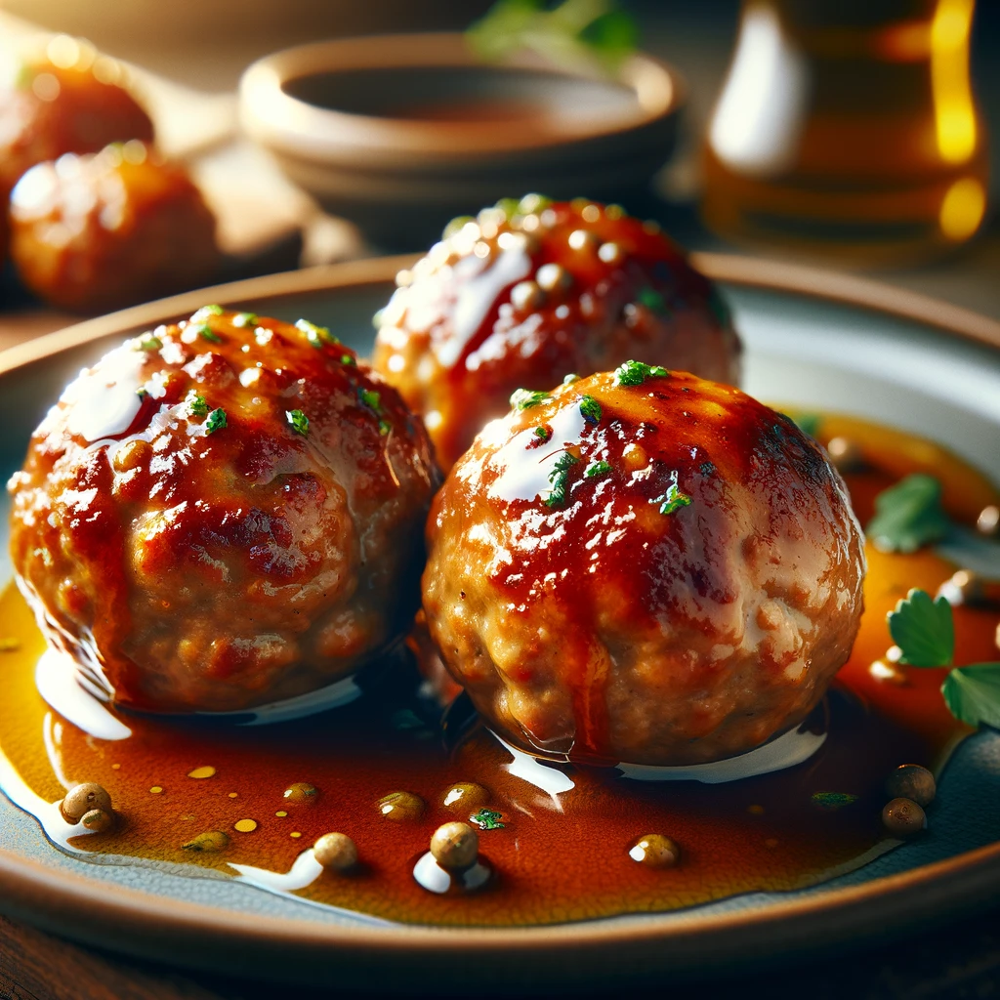

Dumplings

Traditional German Dumplings: A Delightful Comfort Food
In the heart of German cuisine lies a beloved classic - the humble dumpling, or "Klöße" as known in Germany. These soft, pillowy treasures are a staple in many households, cherished for their versatility and comforting texture. Here's an easy recipe to bring this traditional delight to your kitchen.
Ingredients:
- 1 kg potatoes (preferably starchy)
- 2 eggs
- 100g all-purpose flour
- A pinch of nutmeg
- Salt to taste
- Bread crumbs
Method:
- Prepare the Potatoes: Start by boiling the potatoes until they are tender. Drain and let them cool slightly. Then, peel and mash them until smooth.
- Mix the Ingredients: In a large bowl, combine the mashed potatoes, eggs, flour, a pinch of nutmeg, and salt. Mix well to form a smooth dough. If it's too sticky, add a little more flour.
- Form the Dumplings: With floured hands, shape the dough into balls. For an added twist, insert a small cube of bread into the center of each dumpling.
- Cook the Dumplings: Bring a large pot of salted water to a simmer. Gently drop the dumplings into the water. They are done when they float to the surface - usually in about 10-15 minutes.
- Serve Hot:Remove the dumplings with a slotted spoon and drain any excess water. Serve hot, accompanied by your favorite gravy or sauce.
These dumplings are the epitome of comfort food, perfect for a cozy family dinner. They can be served as a side dish with meat or in a hearty stew. The simplicity of ingredients and the heartwarming taste make this dish a timeless favorite in German cuisine. Give this recipe a try and indulge in the warm, comforting embrace of traditional German dumplings!
Back to main menu